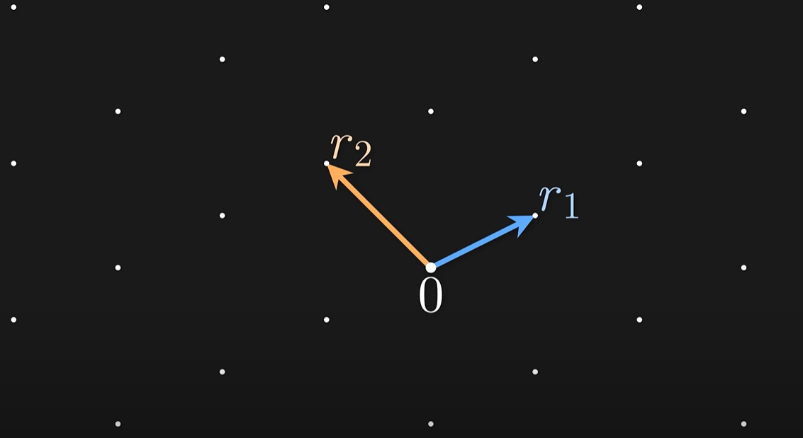

Quantum Computing is a relatively new branch of science that combines elements of classical computing and quantum physics in order to create superpowered computers. Normal computers use bits to store data in the form of ones and zeros known as binary, however quantum computers use qubits to store data. Qubits are quantum particles that are in a constant state of superposition meaning that they are both ones and zeros at the same time. A very small number of qubits can complete difficult tasks insanely quickly compared to classic computers with billions of bits. Now how exactly do these superpowered quantum computers pose a risk to our online privacy and security?
In order to keep our data private while sending it across the web, your computer will automatically encrypt it by changing your message into an unreadable combination of random numbers, letters and symbols which can only be decrypted by the intended users device. This encryption is generated using maths – taking two fairly large prime numbers and multiplying them together to create and even larger number. It is then decrypted by finding out the initial factors that were used to multiply the huge number in the first place. The intended users device can do this very easily as they are given the ‘key’ to find out these numbers however to someone without said key, even using powerful algorithms it would take hundreds of years to calculate the numbers and decode the message. This is when quantum computers come in, due to using qubits they can pretty much complete hundreds of tasks all at once making it very easy for them to quickly break encryption and steal information. If malicious hackers are able to utilise quantum computers then entire governments could be at risk of having secret information stolen and sold to different organizations. Clearly this is a huge concern as more quantum computers are being developed and therefore top mathematicians have been tasked with developing new methods of encryption that not even the most powerful computer would be able to break.
In 2016, the national institute of standards and technology (NIST) launched a competition to find a new way to encrypt data that not even quantum computers could break. They ended up with 82 different possible solutions, the most highly thought of being to do with vectors. Image you have a piece of paper with several evenly spaced black dots on it and you can only draw straight lines in specific directions in order to connect to other dots – this is essentially a vector as shown below:

Finding pathways to specific dots on a 2-d grid is fairly simple to do, even with complicated direction vectors ie. Not just 1 left, 2 up for example. However as you increase the number of dimensions of the grid this becomes more and more difficult to the point that even a quantum computer would struggle (hundreds or even thousands of dimensions). This will be the new version of encryption with only the intended user having the instructions to work out the necessary vectors and decode the message again, preventing hackers from intercepting and stealing important data. So even with superpowered, decrypting quantum computers our online data should hopefully continue to stay safe and secure. Well that is until our technology inevitably advances once again, but we can leave future us to worry about that….